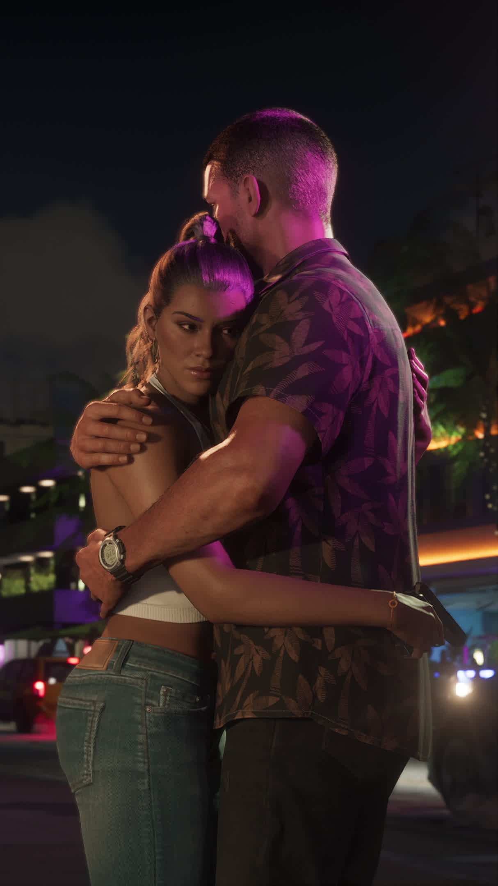

VICE
CITY
CITY
Localização
A CIDADE NUNCA DORME
Palmeiras, praias e uma atmosfera vibrante inspirada na Flórida.
O próximo capítulo de Grand Theft Auto merece um lugar à altura. Explore personagens, cenários, trailers e tudo que movimenta Vice City.
Das praias iluminadas por neon às estradas que cortam o estado de Leonida, descubra o cenário de GTA VI. Este é um portal de fãs, sem vínculo com a Rockstar Games.
Palmeiras, praias e uma atmosfera vibrante inspirada na Flórida.
Explore as paisagens tropicais e as ilhas do universo de Leonida.
Pântanos, natureza e contrastes além das luzes urbanas.
Acompanhe os anúncios de Grand Theft Auto VI, os detalhes do lançamento e as novidades de Leonida nos canais oficiais da Rockstar Games.
Novidades oficiais ↗Conheça Lucia e Jason: o passado, as conexões e os caminhos que se cruzam em Leonida.

Depois de sair da prisão em Leonida, Lucia quer mudar de vida e transformar seus planos em realidade.
Seu pai a ensinou a lutar desde pequena. Uma tentativa de proteger a família a levou à prisão. Agora, ela busca a vida melhor que sua mãe desejava desde Liberty City — e vê em Jason uma possível saída.

Jason procura uma vida tranquila, mas seu caminho nas Keys o mantém próximo de negócios perigosos.
Criado perto de golpistas e criminosos, passou pelo Exército antes de trabalhar para traficantes locais nas Keys. Encontrar Lucia pode mudar seu rumo, embora ele ainda não saiba onde essa parceria vai levá-lo.
Imagens: Rockstar Games. Perfis resumidos a partir das apresentações oficiais dos personagens.
Anúncios e materiais direto das fontes oficiais para você acompanhar GTA VI.
Comunicados e anúncios publicados diretamente pela Rockstar Games.
Página oficial do jogo com materiais divulgados pela desenvolvedora.
Trailers e materiais de GTA VI reunidos na galeria oficial da Rockstar Games.
Selecione uma miniatura para assistir aos trailers oficiais da Rockstar Games no YouTube.
Conheça mais sobre Jason, Lucia e o universo de Leonida.
Assistir no YouTube ↗O primeiro vislumbre de Vice City e do estado de Leonida.
Assistir no YouTube ↗Confira outros materiais publicados na galeria oficial da Rockstar.
Abrir galeria oficial ↗